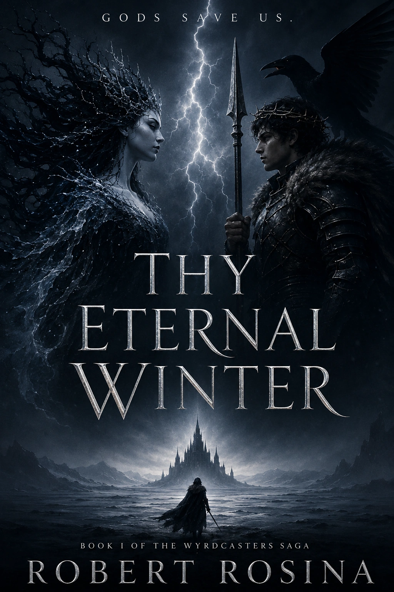
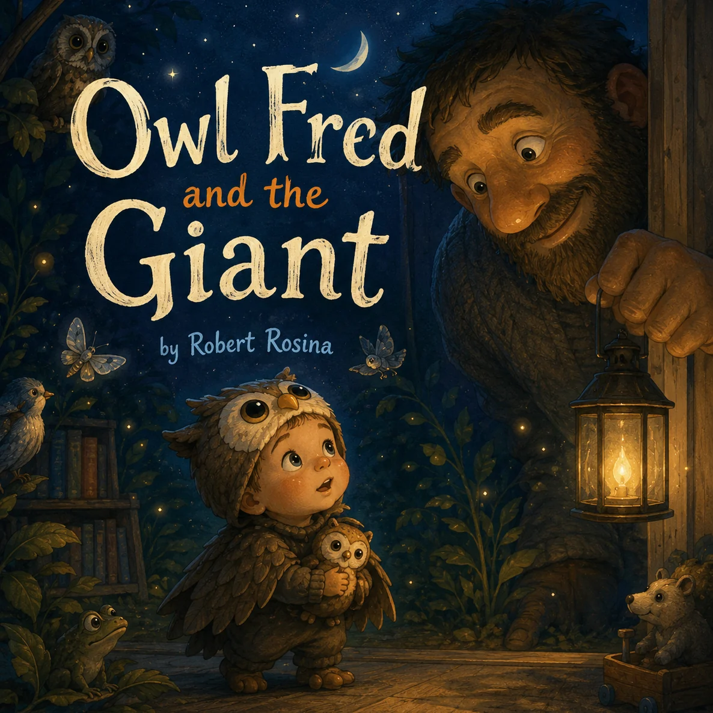
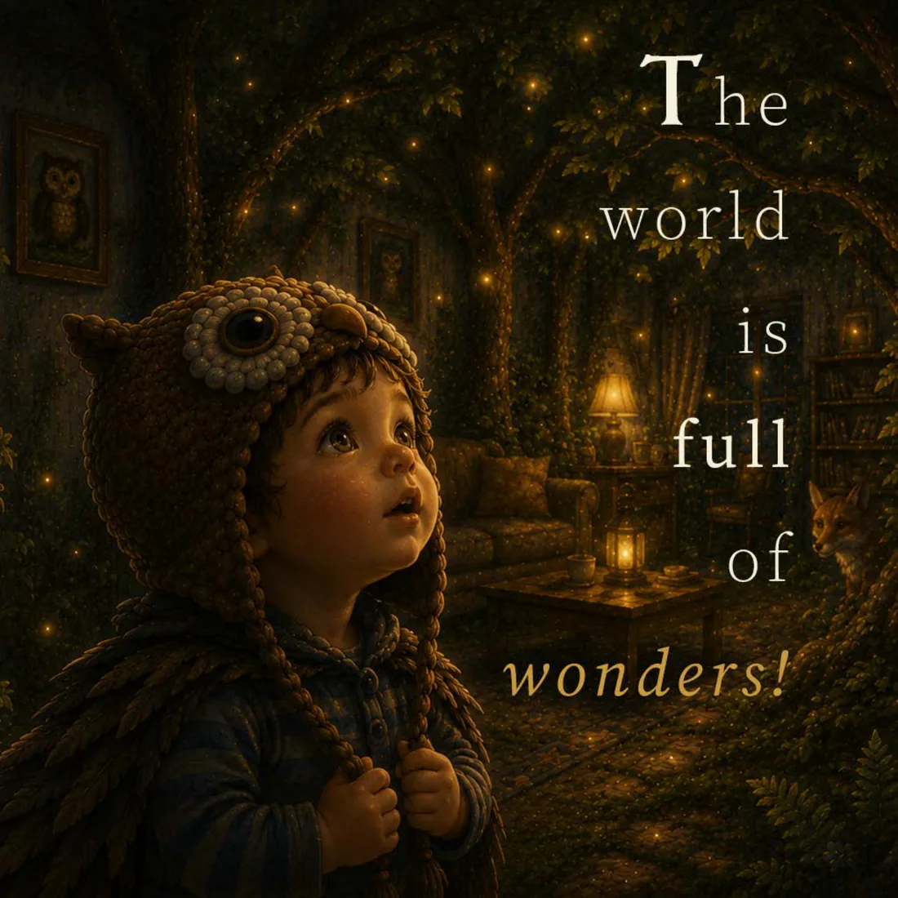
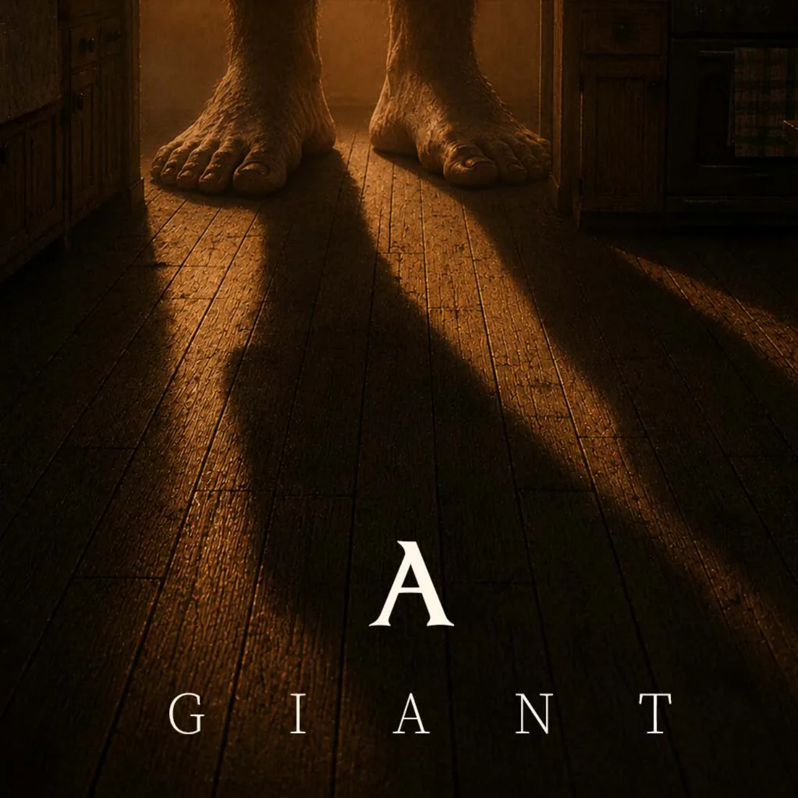
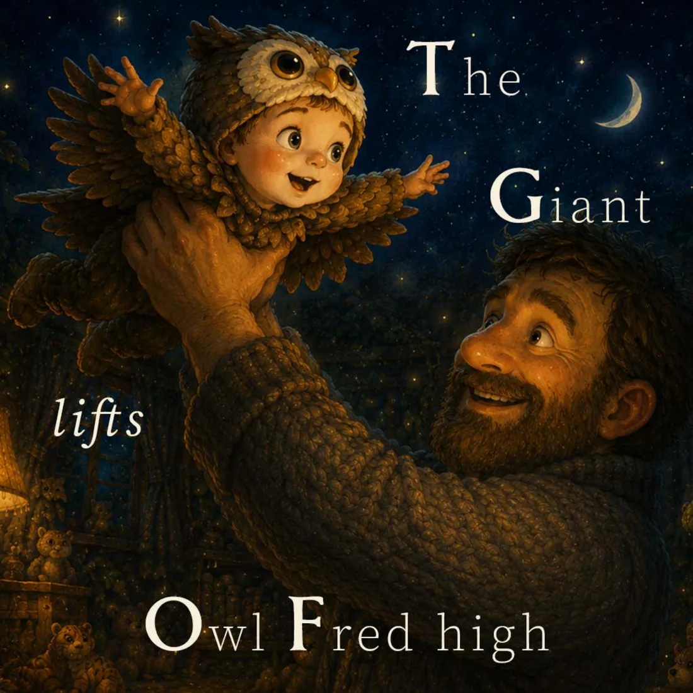

Robert Rosina · Author · Medieval studies
Stories of myth, wonder and fellowship.
Robert Rosina writes mythic fantasy and illustrated children’s stories, from the winter-shadowed world of Thy Eternal Winter to the night-time adventures of Owl Fred. Alongside his writing, his academic interests centre on Anglo-Saxon England, Old English and Old Norse literature, and the legal, religious and mythic worlds of the early Middle Ages.


01 · Books
Two worlds. One concern for courage, wonder and belonging.
Robert writes across mythic fantasy and children’s picture books. Each work begins with a world under pressure and follows the bonds that help its characters find their way through.
02 · Mythic fantasy
The Wyrdcasters Saga · Book I
A tale of chaos in a dying world.
Thy Eternal Winter is the first novel in the Wyrdcasters Saga, set among forgotten gods, spiritual corruption and an approaching winter.
Its people face collapsing institutions, rival forms of belief and powers whose return threatens every settled certainty. The story follows those caught between loyalty, ambition, fear and the need to preserve some remnant of fellowship.
03 · Children’s books
The Owl Fred books
When the light goes out, the adventure begins.
Owl Fred and the Giant follows a small night wanderer with a large appetite for wonder.
After Mum puts out the light, Owl Fred slips from bed to do all the things he missed during the day. Sleeping creatures, hidden places and one enormous surprise lead him through a warm, moonlit adventure.
The story is told in spare, playful lines, with richly illustrated pages designed for reading together at bedtime.



04 · About Robert
Robert Rosina is an Australian author based in Sydney, with a longstanding interest in myth, history and belief.
He writes for adults and children, drawing upon myth, history, faith, political conflict and the human need for fellowship. His stories are concerned with the choices people make when familiar order gives way to fear, wonder or change.
Thy Eternal Winter begins the Wyrdcasters Saga. The Owl Fred books bring the same love of story, night and imaginative worlds to younger readers.
05 · Academic
Medieval studies and research interests.
Alongside his fiction, Robert’s academic interests centre on Anglo-Saxon England, Old English and Old Norse literature, early medieval law and religion, comparative mythology, and the role of myth in shaping religious belief and cultural worldviews.
He is currently studying Old English, Old Norse and Latin in preparation for formal research into law and cosmology in Anglo-Saxon England.
Beyond the page
Robert also performs as The Modern Bard, bringing folk song, sea song and music from imagined worlds into live acoustic performance.
06 · Contact
Publishing and professional enquiries.
For correspondence concerning the books, publishing, rights, interviews or related work, contact Robert directly.
robertrosina@outlook.com.auSydney, Australia